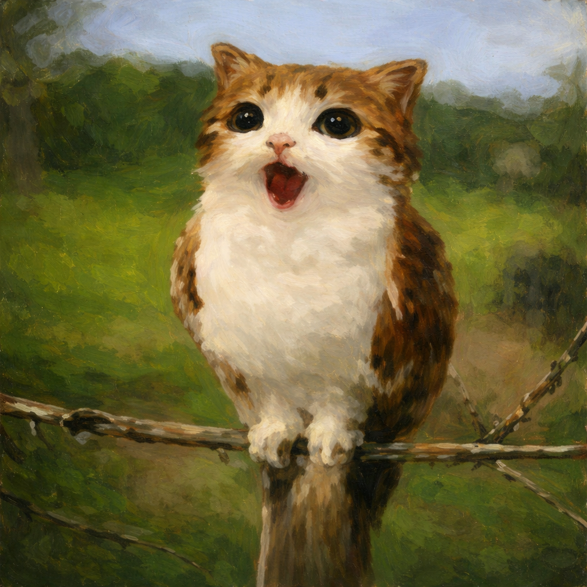

Currículum Vitae
10th-semester Software Engineering student with experience in network scripting, monitoring, and software development fundamentals. Skilled in programming, problem-solving, and documentation. Seeking to contribute technical skills to a software development team.
Bachelor’s degree
Universidad Autónoma de Yucatán
Formación integral en diseño y desarrollo de software, bases de datos, redes y arquitectura de sistemas.
2022 — Presente
Course
Accenture México · Alfredo García
Fundamentos de cómputo en la nube.
2025
● Designed and delivered robotics workshops using Arduino boards for children aged 8–15.
● Developed and managed an inventory system for the project.
Departamento de Seguridad Informática y Redes – Universidad Autónoma de Yucatán
● Configured network devices and services to ensure optimal connectivity and uptime across the department’s infrastructure.
● Created network analysis scripts to detect connectivity issues, monitor service health, and automate troubleshooting processes.
● Developed real-time monitoring dashboards using Grafana, enabling quick visualization of critical metrics such as DNS service status and response time.
● Ensured that less than 5% of network devices experienced downtime during the internship period through proactive monitoring and testing.
● Authored technical documentation and user guides to support the maintenance and onboarding of internal IT tools.